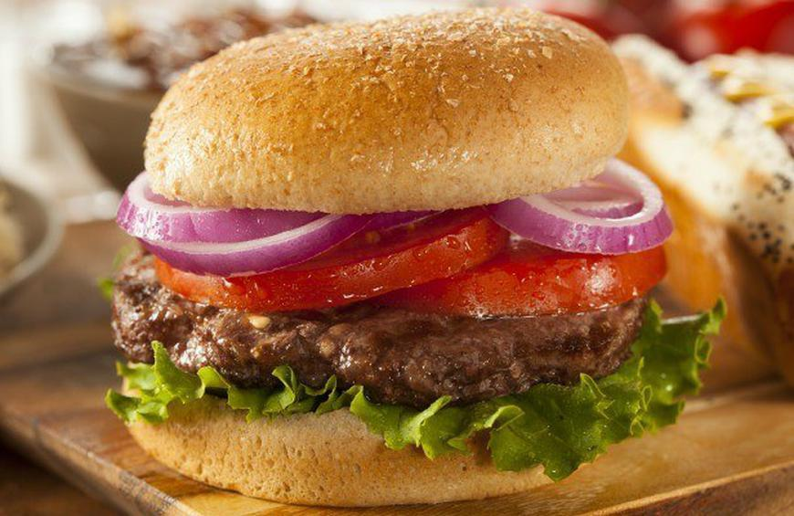

Hamburgers

A delicious hamburger seasoned with Worcestershire sauce, cayenne pepper, and garlic. Mix the ground beef with, egg, and evaporated milk. It is really simple to grill patties! After you're done grilling you will add tomatoes, red onions, and lettuce, I hope you enjoy!
Ingredients
- 2 pounds of ground beef
- 1 egg, beaten
- 3 tablespoons of evaporated milk
- 2 tablespoons of Worcestershire sauce
- 1/8 teaspoon of cayenne pepper
- 2 cloves of garlic, minced
Steps
- Begin to by taking out all the items needed to make your dish. Pans, bowls, and seasonings.
- Season the ground beef, make sure you add all the ingredients so you can have a nice juicy burger.
- Cook patties for 10 mins. 4-5 mins on one side, then the same for the other.(Or until patties are to you liking.)
- Once you are done cooking your burger begin to plate it. Add your tomatoes, red onions, and lettuce.
- Bon Appétit!